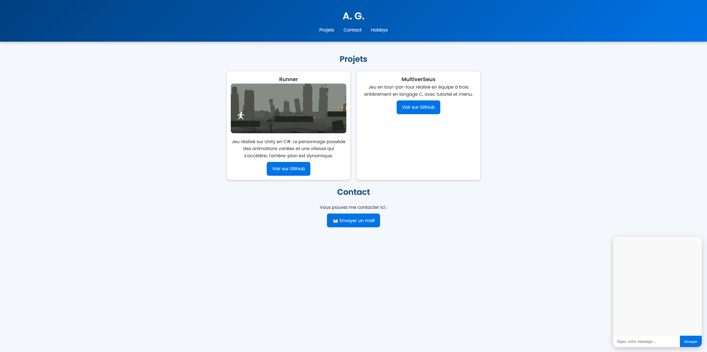

Détails du projet : Ce site internet

Ce site a été créé en HTML5/CSS/JS.
Avant de le réaliser, j’ai suivi une formation Udemy gratuite d’1h sur HTML/CSS/JS.
Ensuite, j’ai mis en pratique mes connaissances pour créer ce portfolio interactif.
Le chatbot utilise un script JavaScript avec mini IA.
Technologies utilisées :
HTML5 / CSS3 / JavaScript
Animation CSS pour le chatbot
Responsive Design
Difficultés rencontrées :
Apprendre à gérer l’ouverture/fermeture du chatbot
Créer des vignettes interactives pour les projets
Appliquer le responsive design pour mobiles et tablettes
Dates :
Réalisé en août 2025